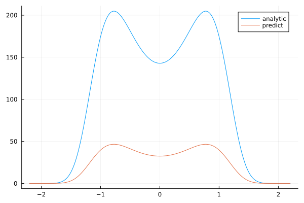

Imposing Constraints on Physics-Informed Neural Network (PINN) Solutions
Let's consider the Fokker-Planck equation:
\[- \frac{∂}{∂x} \left [ \left( \alpha x - \beta x^3\right) p(x)\right ] + \frac{\sigma^2}{2} \frac{∂^2}{∂x^2} p(x) = 0 \, ,\]
which must satisfy the normalization condition:
\[\Delta t \, p(x) = 1\]
with the boundary conditions:
\[p(-2.2) = p(2.2) = 0\]
with Physics-Informed Neural Networks.
using NeuralPDE, Lux, ModelingToolkit, Optimization, OptimizationOptimJL, LineSearches
using DomainSets: Interval
using IntervalSets: leftendpoint, rightendpoint
# the example is taken from this article https://arxiv.org/abs/1910.10503
@parameters x
@variables p(..)
Dx = Differential(x)
Dxx = Differential(x)^2
α = 0.3
β = 0.5
_σ = 0.5
x_0 = -2.2
x_end = 2.2
eq = Dx((α * x - β * x^3) * p(x)) ~ (_σ^2 / 2) * Dxx(p(x))
# Initial and boundary conditions
bcs = [p(x_0) ~ 0.0, p(x_end) ~ 0.0]
# Space and time domains
domains = [x ∈ Interval(x_0, x_end)]
# Neural network
inn = 18
chain = Lux.Chain(Dense(1, inn, Lux.σ),
Dense(inn, inn, Lux.σ),
Dense(inn, inn, Lux.σ),
Dense(inn, 1))
lb = x_0
ub = x_end
# Use a simple trapezoidal rule for the normalization constraint.
# This avoids AD issues with Integrals.jl's C-based quadrature solvers.
norm_xs = collect(range(lb, ub, length = 200))
norm_dx = Float64(norm_xs[2] - norm_xs[1])
function norm_loss_function(phi, θ, p)
# Evaluate phi at quadrature points (each point as a 1-element vector)
s = sum(1:length(norm_xs)) do i
first(phi([norm_xs[i]], θ))
end
norm_val = 0.01 * s * norm_dx
abs(norm_val - 1)
end
discretization = PhysicsInformedNN(chain,
QuadratureTraining(),
additional_loss = norm_loss_function)
@named pdesystem = PDESystem(eq, bcs, domains, [x], [p(x)])
prob = discretize(pdesystem, discretization)
phi = discretization.phi
sym_prob = NeuralPDE.symbolic_discretize(pdesystem, discretization)
pde_inner_loss_functions = sym_prob.loss_functions.pde_loss_functions
bcs_inner_loss_functions = sym_prob.loss_functions.bc_loss_functions
approx_derivative_loss_functions = sym_prob.loss_functions.bc_loss_functions
cb_ = function (p, l)
println("loss: ", l)
println("pde_losses: ", map(l_ -> l_(p.u), pde_inner_loss_functions))
println("bcs_losses: ", map(l_ -> l_(p.u), bcs_inner_loss_functions))
println("additional_loss: ", norm_loss_function(phi, p.u, nothing))
return false
end
res = Optimization.solve(
prob, BFGS(linesearch = BackTracking()), callback = cb_, maxiters = 600)retcode: Success
u: ComponentVector{Float64}(layer_1 = (weight = [1.5079709078733943; 2.653092547900008; … ; -0.6819936669332163; 2.0726669578873564;;], bias = [-0.30607605722510584, 3.0264208381524274, -0.9007993060117921, 4.950036234865696, 3.350790948409542, -4.092372429188761, 1.2183618281996822, -2.789963139771944, -6.400895076651, 5.6821043299927325, 0.4925725259366248, -2.052576672332601, 1.3611352877729672, 3.103216687145483, 1.2667415376225173, 0.7334504054228963, -0.17366008119100856, 0.5442712083103172]), layer_2 = (weight = [-0.8607882623395192 -4.343468833308244 … -0.7517621889703548 0.06025720812972761; 0.23846537983674593 -1.7842007294134739 … 0.8350365879530631 -0.6418180498125723; … ; 0.20918805792032277 1.6040662234129301 … -0.026239264103711933 0.2033633169126162; 0.8470811212600403 -0.32148334141427937 … 1.6379294997444367 3.3340161772746986], bias = [-1.2004276025982334, 0.22377232343345102, -0.704475005929125, -0.08019308629821187, -2.4793202637651617, 0.2730187352675092, -0.6446371294776342, -0.0876676744014624, -1.777009330909954, -0.6705209990136293, -0.4143498679616962, 0.13853028401313636, 0.7123004106220644, 0.7135071043415191, -0.43906518830732855, 0.4666721139361498, -0.4685752685936479, 2.1505054076992596]), layer_3 = (weight = [1.174922906061456 -0.2621317384495929 … -0.1792767850043614 0.8916002516419215; -0.9265027667215304 0.6752221183371822 … 0.9482945412482501 0.8627035993470393; … ; 3.64321387311469 -0.3885854190620018 … 1.6561844822340377 6.571179969341314; -1.766282131505793 0.1163336781816655 … 0.5545129974909905 -2.523405936419098], bias = [-0.6234665863969548, 0.8421469949112208, 1.3219481168236262, -1.5328224295737198, -0.7954244952627889, -1.174968254904578, 0.319946642917246, -0.23177739294248212, 1.0475252918682134, -0.5367155945665827, -1.2321929602653559, -0.8867400173606246, -1.1072860659149848, -0.8556332818039597, -1.9026514778950003, 0.5208937585404317, -0.11620412144765947, 1.6537975754748122]), layer_4 = (weight = [-4.8105896687569745 14.567724017446839 … -0.6449080936681629 33.84694887371649], bias = [6.438741386239806]))And some analysis:
using Plots
C = 142.88418699042 #fitting param
analytic_sol_func(x) = C * exp((1 / (2 * _σ^2)) * (2 * α * x^2 - β * x^4))
xs = [leftendpoint(d.domain):0.01:rightendpoint(d.domain) for d in domains][1]
u_real = [analytic_sol_func(x) for x in xs]
u_predict = [first(phi(x, res.u)) for x in xs]
plot(xs, u_real, label = "analytic")
plot!(xs, u_predict, label = "predict")